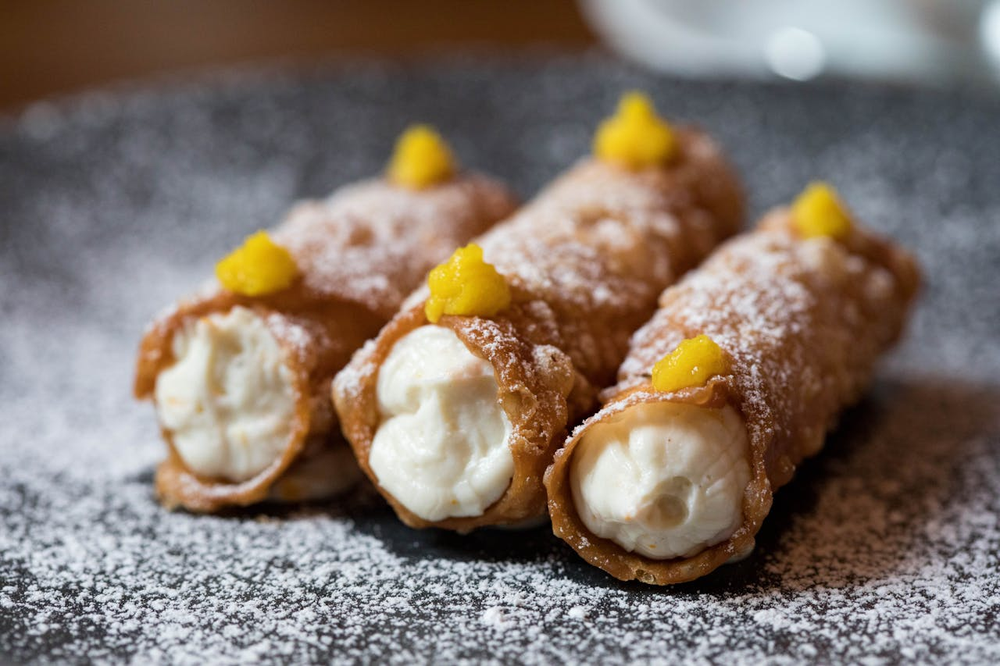

Home
Cannoli

A cannoli is a tube-shaped Italian dessert that consists of fried
pastry dough stuffed with a sweet, creamy cheese filling.
Cannoli are Sicilian pastries consisting of fried, tube-shaped shells filled with a sweet, creamy filling,
traditionally made with ricotta cheese. The shells are typically made from a dough containing
flour, cocoa, coffee, sugar, and butter. The filling is often flavored with sugar, vanilla, and sometimes chocolate
or other additions. Cannoli are a popular dessert, particularly during the holidays, and are known for their crispy
shell and creamy filling.
Ingredients
For the Shells
- 3 cups all-purpose flour
- ¼ cup white sugar
- ¼ teaspoon ground cinnamon
- 3 tablespoons shortening
- ½ cup sweet Marsala wine
- 2 tablespoons water
- 1 tablespoon distilled white vinegar
- 1 large egg
- 1 egg yolk
- 1 egg white
- 1 quart oil for frying, or as needed
For the Filling
- 1 (32 ounce) container ricotta cheese, drained
- ½ cup confectioners' sugar
- 4 ounces semisweet chocolate, chopped (Optional)
- 1 teaspoon lemon zest, or to taste